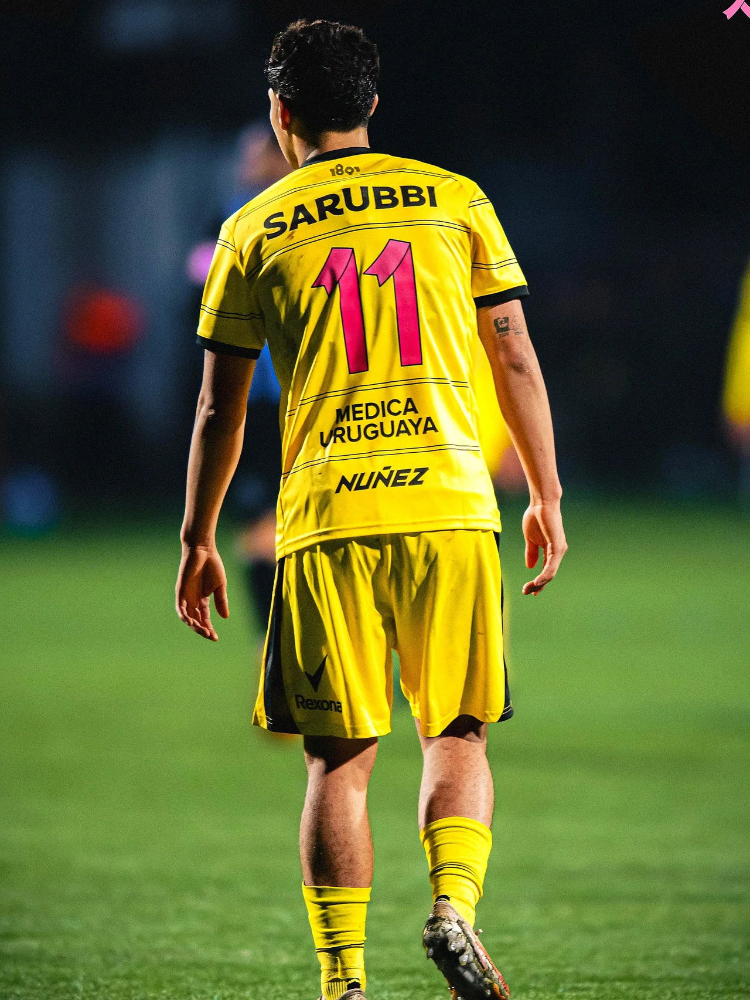
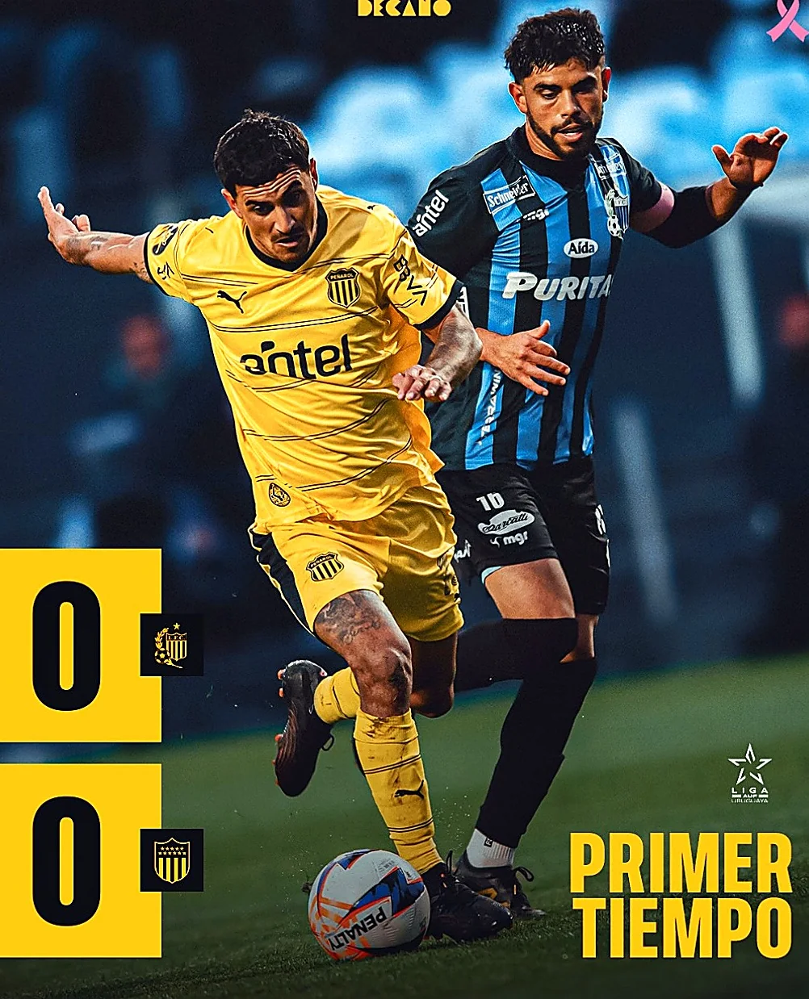
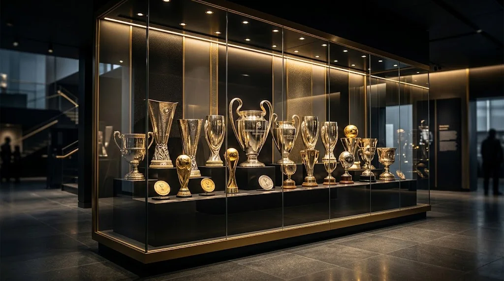
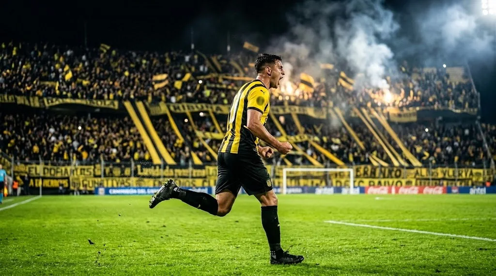
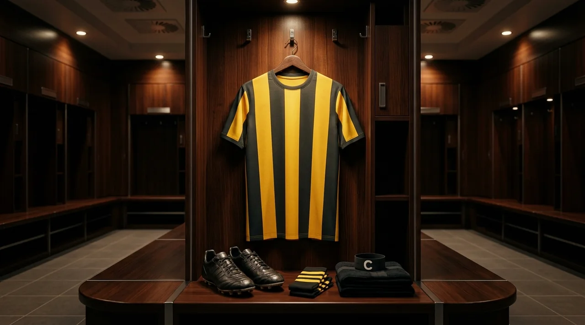

⚽ Laboratorio en Los Aromos
Diego Aguirre ajusta la presión alta, los relevos en la mitad de la cancha y la pelota quieta con Leonardo Fernández como conductor ofensivo del equipo titular.
Síntesis diaria multi-fuente (Oficial CAP, Padre y Decano, Ovación, Referí y FútbolUy) procesada con Gemini Web GFlash 3.8
Diego Aguirre ajusta la presión alta, los relevos en la mitad de la cancha y la pelota quieta con Leonardo Fernández como conductor ofensivo del equipo titular.
Peñarol sostiene su solidez en el Estadio Campeón del Siglo, liderando las métricas de goles a favor, diferencia de goles y valla menos vencida del Campeonato Uruguayo.
Gran ritmo de canje de socios y butaquistas en TuApp y venta de generales en TickAntel para acompañar al Carbonero en la Ruta 102.
El equilibrio entre referentes de jerarquía y futbolistas formados en la Ciudad Deportiva Néstor "Tito" Gonçalves potencia el recambio del plantel en todas las líneas.
El Club Atlético Peñarol atraviesa una etapa determinante de la temporada donde cada punto en la Tabla Anual Acumulada resulta decisivo para asegurar la ventaja deportiva en la definición del Campeonato Uruguayo y el boleto directo a la fase de grupos de la Copa CONMEBOL Libertadores. En el Complejo Deportivo Washington Cataldi (Los Aromos), el cuerpo técnico liderado por Diego Aguirre ha consolidado una estructura 4-2-3-1 de transiciones veloces, amplitud por las bandas y máxima eficacia en la pelota parada.
La pegada de media y larga distancia de Leonardo Fernández, sumada al desgaste incansable y diagonal constante de Maximiliano Silvera en el frente de ataque y el orden táctico del doble cinco, convierten al conjunto aurinegro en el equipo de mayor producción ofensiva del certamen.
Consulta la clasificación actualizada y simula qué pasa en la tabla según los resultados de las próximas 3 fechas
| # | Equipo | PJ | PG | PE | PP | DG | PTS |
|---|---|---|---|---|---|---|---|
| 1 | ★ Peñarol | 28 | 21 | 5 | 2 | +40 | 68 |
| 2 | Nacional | 28 | 19 | 6 | 3 | +30 | 63 |
| 3 | Boston River | 28 | 15 | 6 | 7 | +12 | 51 |
| 4 | Defensor Sporting | 28 | 13 | 9 | 6 | +14 | 48 |
| 5 | Danubio | 28 | 12 | 10 | 6 | +9 | 46 |
| 6 | Wanderers | 28 | 11 | 7 | 10 | -1 | 40 |
Selecciona el resultado proyectado de Peñarol en cada fecha para ver al instante el impacto en la tabla de posiciones:
Elige el sistema táctico, haz clic en un jugador de la cancha y luego en un suplente para hacer cambios, y descarga tu 11 en PNG
1° Toca un jugador en la cancha para seleccionarlo (borde dorado).
2° Toca un jugador del banco aquí abajo para realizar el cambio táctico:
Imágenes capturadas de Instagram (@oficialcap y @padreydecano), transformadas con Gemini Web Vision y blindadas con metadatos EXIF/XMP/GPS del Campeón del Siglo

✨ Gemini Web Vision + SEO EXIFLa fortaleza aurinegra en Ruta 102 Km 23.500 vibrando con más de 40.000 almas en amarillo y negro.

✨ Gemini Web Vision + SEO EXIFHumo oro y carbón, banderas gigantes y el aliento incondicional desde la Tribuna Washington Cataldi.
Trabajos tácticos de presión y definición bajo las órdenes de Diego Aguirre preparando la próxima fecha.

✨ Gemini Web Vision + SEO EXIF1960, 1961, 1966, 1982 y 1987: la vitrina dorada del Club Campeón del Siglo XX de Sudamérica.

✨ Gemini Web Vision + SEO EXIFFestejo aurinegro frente a la tribuna para defender la cima de la Tabla Anual del Fútbol Uruguayo.

✨ Gemini Web Vision + SEO EXIFLas bastonadas amarillas y negras listas en el vestuario local del Estadio Campeón del Siglo.
Cobertura verificada de Padre y Decano, FútbolUy, Ovación y Google News Uruguay
Integración directa con nuestro Radar de Transporte Metropolitano (horarios.servicioti.com.uy) y guías oficiales en www.servicioti.com.uy
Conexión desde Centro, Ciudad Vieja, 8 de Octubre e Intercambiador Belloni hacia Camino Maldonado / Ruta 8 y Ruta 102:
Ideal para hinchas que viajan desde Terminal Río Branco, Tres Cruces, Barros Blancos, Pando o Ciudad de la Costa:
Club Campeón del Siglo XX de Sudamérica (IFFHS) • El palmarés más glorioso y la paternidad clásica documentada
Pon a prueba cuánto sabes de las hazañas, finales de América e ídolos eternos del Glorioso Peñarol:
Respuestas directas estructuradas para buscadores y asistentes de Inteligencia Artificial
En el Match Center superior de manya.servicioti.com.uy encuentras el cronómetro en vivo segundo a segundo, estadio, rival y pronóstico meteorológico en el Estadio Campeón del Siglo. Los encuentros del Campeonato Uruguayo se emiten en directo por VTV Plus y Disney+, mientras que las crónicas, puntajes 1x1 y análisis tácticos se publican en www.servicioti.com.uy.
El Club Atlético Peñarol (fundado el 28 de septiembre de 1891) cuenta con 5 Copas CONMEBOL Libertadores (1960, 1961, 1966, 1982 y 1987), 3 Copas Intercontinentales del Mundo (1961 ante Benfica, 1966 ante Real Madrid y 1982 ante Aston Villa), 1 Supercopa de Campeones Intercontinentales (1969) y 54 Campeonatos Uruguayos, siendo distinguido por la IFFHS como el Club Campeón del Siglo XX de Sudamérica.
Hacia el Estadio Campeón del Siglo (Ruta 102 Km 23.500 y Camino Mangangá) puedes viajar en las líneas urbanas y diferenciales de CUTCSA (D8, 103, 300 y circuitos especiales Estadio) y en las líneas suburbanas de COPSA por Ruta 8 (7A, 7E, 724) y Ruta 102. Consulta el próximo ómnibus en tiempo real en horarios.servicioti.com.uy.